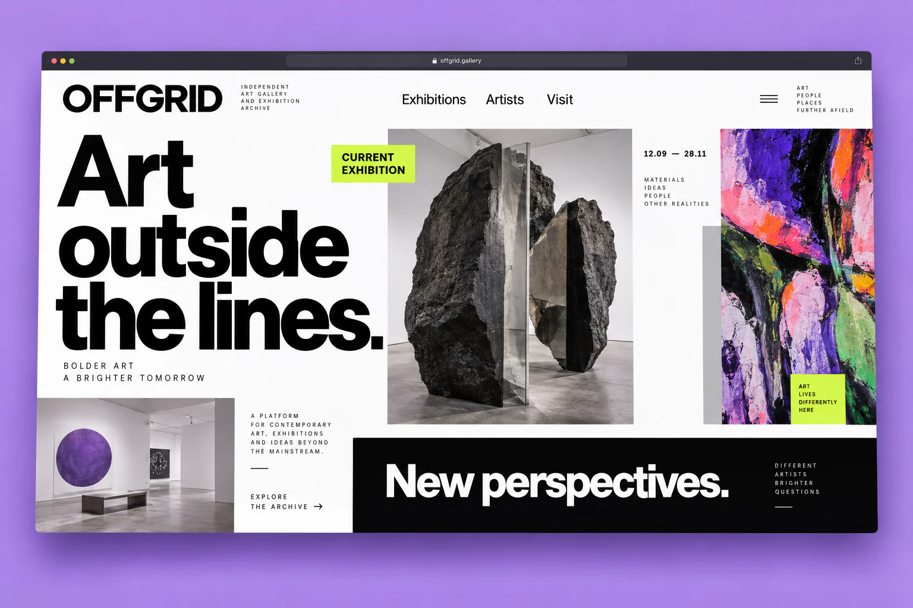

Find the visual language
Oversized black typography, sharp acid-green labels and a modular image grid. A visual language that frames the artwork without competing with it.
Offgrid
A gallery website concept that brings current exhibitions and an evolving art archive into a bold editorial grid.

Gallery websites must balance expressive presentation with practical visit information. This concept gives exhibitions their own visual identity while keeping artists, dates and access easy to find.
Oversized black typography, sharp acid-green labels and a modular image grid. A visual language that frames the artwork without competing with it.
Discover the current exhibition and plan a visit from one page.
Browse artists and previous exhibitions through a connected archive.
Explore individual works with supporting context and exhibition details.
A self-initiated concept exploring the product experience and visual direction.